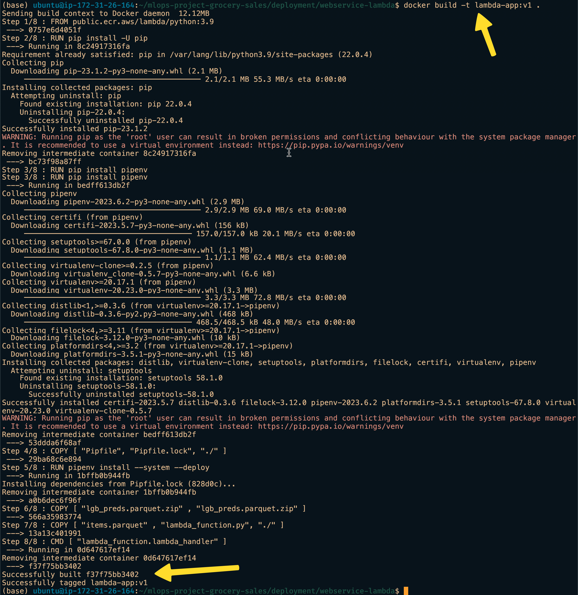
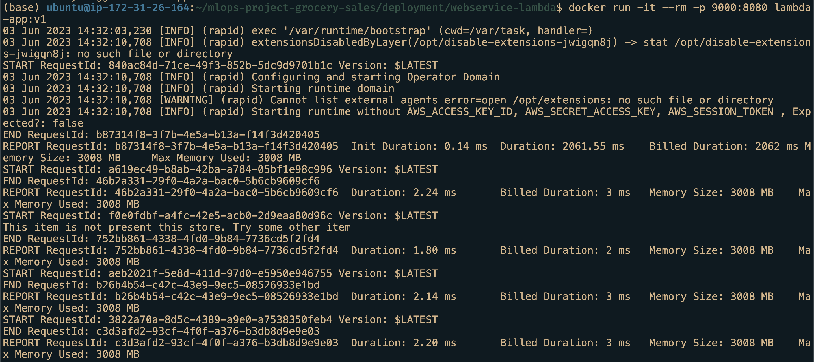
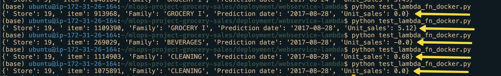

Introduction
This post is a follow up to my previous post on deploying with docker. This will be part 1 of the deploy using Docker series. In this part, I will introduce the concept of lambda_function and how it can tested locally.
Why Lambda_function?
The customer from my previous post doesn’t want to keep things in their local machine and wish for a cloud option. Also don’t want to reserve resources as they expect only intermittent requests. What could be a viable solution? Enter Lambda_function. Each cloud provider has other own name for lambda function. We will use AWS and it is called Lambda.
AWS Lambda is a serverless compute service that run code in reponse to an event and automatically manages the underlying compute resources for us. Moreover we pay only for what we use.1
Before transitioning into AWS Lambda cloud solution, we can modify our program to AWS Lambda coding standards and test it locally.
AWS Lambda Handler
Lambda function handler has certain coding standards. 2 For example, the name of the python file must be lambda_function.py and the handler function lambda_handler.
Going by that standard, we can modify our flask-app.py from previous post to lambda_function.py.
lambda_function.py
import os
import pandas as pd
def read_parquet_files(filename: str):
"""
Read parquet file format for given filename and returns the contents
"""
df = pd.read_parquet(filename, engine="pyarrow")
return df
df_test_preds = read_parquet_files("lgb_preds.parquet")
df_items = read_parquet_files("items.parquet")
def predict(find, item_idx: int):
"""
Takes the json inputs, processes it and outputs the unit sales
"""
try:
idx = pd.IndexSlice
x = df_test_preds.loc[idx[find["store_nbr"], item_idx, find["date1"]]][
"unit_sales"
]
except KeyError:
print("This item is not present this store. Try some other item")
return -0.0
else:
return float(round(x, 2))
def lambda_handler(event, context=None) -> dict:
"""
lambda handler for predict method
"""
find = event["find"]
item = df_items.sample(1)
item_idx, item_family = item.index[0], item["family"].values[0]
pred_unit_sales = predict(find, item_idx)
result = {
" Store": find["store_nbr"],
" item": int(item_idx),
"Family": item_family,
"Prediction date": find["date1"],
"Unit_sales": pred_unit_sales,
}
return result- 1
- Default handler function name
Like last time we will use Pipenv to install dependencies. If you’re new, kindly visit deploy with docker post to know why we use Pipenv.
Dockerfile
Dockerfile
FROM public.ecr.aws/lambda/python:3.9
RUN pip install -U pip
RUN pip install pipenv
COPY [ "Pipfile", "Pipfile.lock", "./" ]
RUN pipenv install --system --deploy
COPY [ "lgb_preds.parquet" , "lgb_preds.parquet" ]
COPY [ "items.parquet" , "lambda_function.py", "./" ]
CMD [ "lambda_function.lambda_handler" ]- 1
-
Using AWS ECR hosted
python-3.9docker image. As to why I will explain in the next part. - 2
-
Pay close attention as to how the handler function is invoked. It is not
entrypointlike last time.
Docker image build and running the container
We use the same build command as last time.
Terminal 1
docker build -t lambda-app:v1 .The result if successful would look like this:

Running the container is different this time as the port exposed is different. AWS allows local testing of Lambda function code through a localhost endpoint. This endpoint is at 9000 port(it can be customised). Inside docker container we make it listen to 8080 port. So we forward 9000 to 8080.
Terminal 1
docker run \
-it \
--rm \
-p 9000:8080 \
lambda-app:v1- 1
-
port forwarding
9000to8080
Result looks like so:

Test Lambda function locally
Now to test the function locally we need to create test_docker_fn.py file. Inside this file we can set the url as http://localhost:9000/2015-03-31/functions/function/invocations which is AWS’ local lambda function testing platform.
test_docker_fn.py
import requests
event = {"find": {"date1": "2017-08-28", "store_nbr": 19}}
# To test lambda function locally
url = "http://localhost:9000/2015-03-31/functions/function/invocations"
response = requests.post(url, json=event, timeout=15)
print(response.json())We open another terminal and run the file we created.
Terminal 2
python test_docker_fn.pyIf there are no errors, we should see some predictions. 
Conclusion
So transitioning to lambda function locally is a success. In the next part, we can migrate completely to AWS cloud.